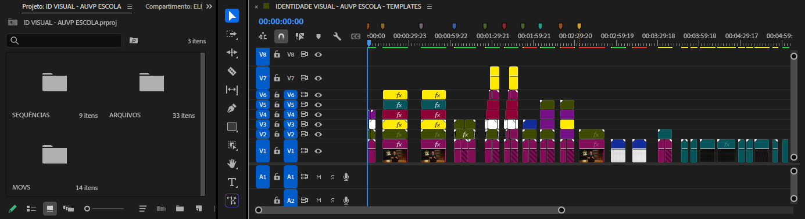
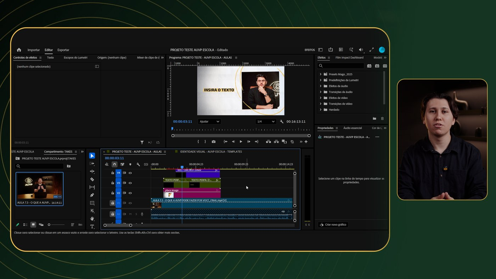
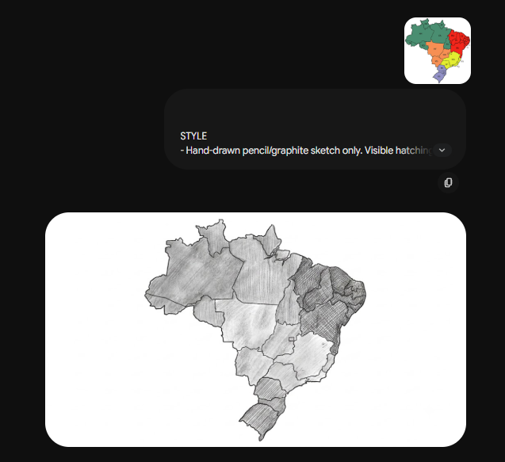

Ahoy marújo, aqui estão os elementos gráficos disponíveis para suas edições. Cada preview mostra um template pronto para uso. Leia com atenção e embarque nesse navio de aprendizado.
Esses elementos estão disponíveis como projeto editável no Premiere. Dentro do projeto, tudo estará dividido em pastas com elementos e sequências, cada um descrito com o que é. Você pode usar esses “templates” como base para editar o seu material.

Organização do projeto no Premiere: pastas de sequências, arquivos e MOVs (à esquerda) e a timeline com os elementos e sequências (à direita).
Clique aqui para acessar os materiaisAssista à aula completa mostrando como editar um motion da AUVP Escola, do projeto à finalização.

Citação de uma pessoa, empresa ou afins, acompanhada da foto da pessoa (ou do elemento) citada.
Utilizada para introdução de módulos ou como padrão para slides — informações em forma de texto e grifos.
Texto-cabeça com ilustrações, usado para introdução de assuntos.
Exemplificação, com ilustração, de um assunto sendo comentado — acompanhada de auxílio visual com elementos, ilustrações e textos.
Exemplificação de gráfico com porcentagem e informação de textos.
Exemplificação de gráfico de dados com números e informação de textos.
Exemplificação em forma de lista.
Exemplificação de gráfico em linhas e curvas.
Exemplo de movimentação de câmera (shaking) aplicada aos gráficos, para dar dinamismo à apresentação dos dados.
Segundo exemplo de movimentação de câmera (shaking) sobre os gráficos — variação de ritmo e intensidade em relação ao exemplo anterior.
Use este prompt em qualquer gerador de imagem por I.A. para criar as ilustrações em grafite (preto, branco e cinza). Copie o texto no botão abaixo.
STYLE - Hand-drawn pencil/graphite sketch only. Visible hatching, organic strokes, soft shading. - No vector look, no hard outlines, no crisp geometric lines, no sharp cutouts. COLOR - Black, white, and shades of grey only. No color of any kind: no reds, greens, blues, yellows, no tints, no accents, no hues anywhere. - Exception: if the subject is a logo that is intrinsically defined by color, keep its core colors but render in sketch texture. Never place a logo on a black or checkerboard background. BACKGROUND - Pure white, clean. - No grey, no shadow, no gradient, no texture. - No scenery, walls, environment, landscape, or decorative background elements. - Never use a fake transparency checkerboard. COMPOSITION - 16:9 horizontal widescreen. - One isolated central element (the main object, person, or concept). - Simple and clear, generous white space, minimal extra detail. Good visual readability. TEXT - No text of any kind: no words, letters, numbers, labels, captions, signage, acronyms, or written symbols. - For logos, reinterpret the idea as a visual symbol, not as text. MONEY - Always depict money as Brazilian Real banknotes. OUTPUT - One image per prompt. FILE NAMING - Pattern: PH##_V#_[short-slug].png PH## = zero-padded placeholder number (PH01-PH16) V# = variation number (V1, V2, V3) slug = lowercase, hyphen-separated, 2-4 words describing the central element (no spaces, no special characters) - Examples: PH01_V1_padlock-coins.png / PH01_V2_piggy-bank-arrow.png / PH06_V1_tilted-scale.png / PH16_V3_scale-land-coins.png

Acima: o prompt de estilo aplicado gera a ilustração em grafite. A I.A. usada pode ser qualquer uma.
Removendo o fundo: use o Luma Key no Premiere ou o Photoshop para isolar a ilustração do fundo branco.
Quando a ilustração precisar manter as cores originais (ex.: logos coloridos), use este prompt. Copie o texto no botão abaixo.
COLOR IMAGE GENERATION GUIDELINES (apply to every image, always) COLOR - Preserve the original color palette when recreating a logo or colored symbol. Match the reference. - Do not convert to black-and-white unless specifically requested. - Do not add new colors. STYLE - Hand-drawn look: colored pencil, crayon, marker, or rough sketch shading. - Color must have visible texture, not flat vector fill. - No shadows, 3D effects, gradients, glow, or glossy effects. Do not overcomplicate the design. BACKGROUND - Pure white, clean. - No grey, no gradient, no texture, no shadowy backdrop. - If the source image has a black background, ignore it. Do not reproduce it. - Never use a checkerboard or fake transparency (no grey squares simulating alpha). COMPOSITION - 16:9 layout unless another format is requested. - Main object centered or cleanly positioned, with enough white space around it. - One isolated element. No extra scenery, props, frames, or decorative elements. - Keep it simple and polished. FIDELITY - For logos, preserve the main shape, layout, proportions, and visual identity. - Result should be a sketch-textured version of the original, not a redesign. TEXT (depends on request) - Concept illustrations: no words, letters, or numbers. - Logo recreations: text may remain if it is part of the logo. - Exception: if I ask for "standard rules," remove text and produce a symbolic version instead. OUTPUT - One image per prompt.
Mesmo fluxo do prompt sem cor, mas preservando as cores originais do elemento de referência.
Removendo o fundo: use o Luma Key no Premiere ou o Photoshop para isolar a ilustração do fundo branco.